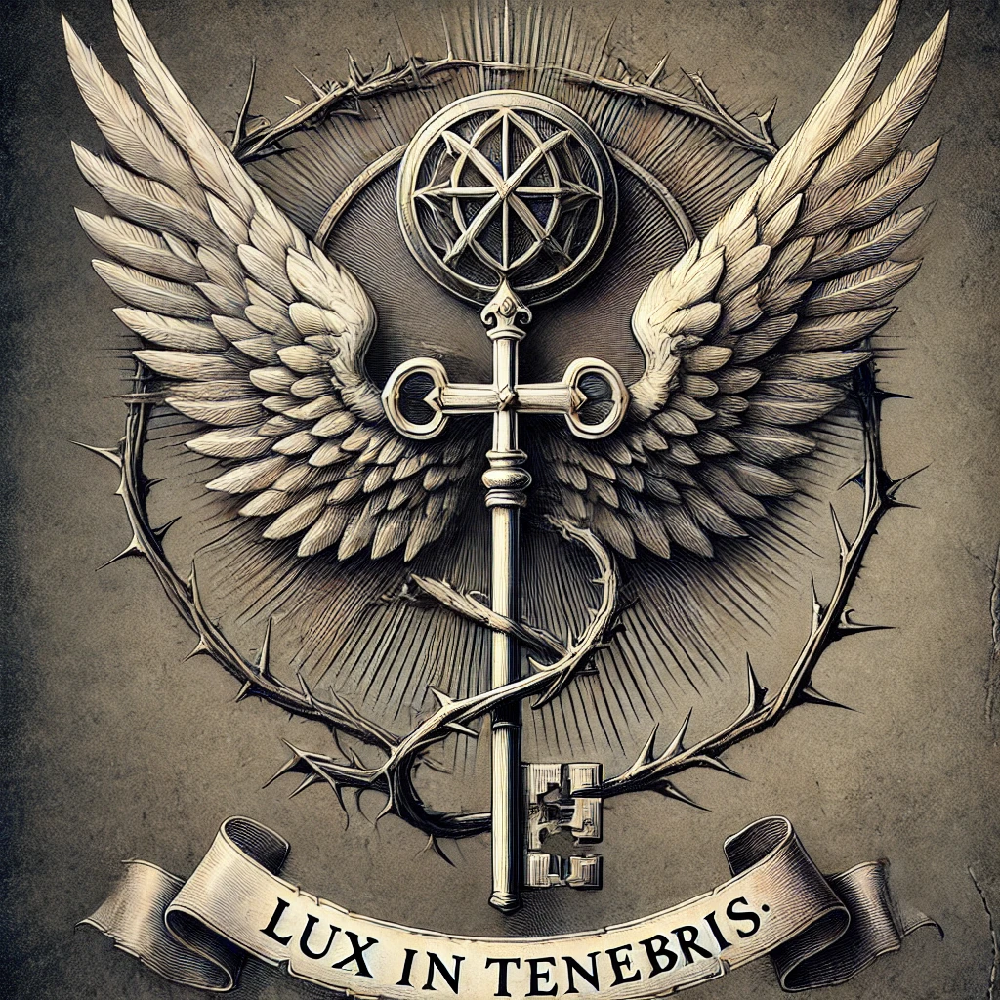

Order of St Aelfric
Leadership: Lord Percival Harcourt, Earl of Wrexham (Senior Commander)
Territory: Global network: London, Lyon, Vienna, and beyond
Members
Overview
The Order of St. Aelfric is a clandestine society of nobles, gentry, and scholars dedicated to protecting England — and the wider world — from supernatural threats. Founded in the 11th century by St. Ælfric of Glastonbury, who discovered forbidden knowledge in the ruins of a Roman temple, the Order has endured for centuries through secrecy, discipline, and sacrifice.
Symbol: A winged key entwined with thorns — hidden knowledge and the cost of enlightenment. Motto: Lux in tenebris — Light in the darkness.
Headquarters: Ravenwood_House, Mayfair, London. Publicly an elite antiquarian society for scholars and collectors. Beneath it: a vast archive of forbidden tomes, occult symbols, and supernatural artefacts.
Convalescent facility: Hartwell_House, Mayfair, London. Recovery, training, and residence for Order operatives.
Mission
- To Seek Knowledge — Study unnatural phenomena, lost histories, and forbidden texts.
- To Contain the Unknowable — Secure artefacts, suppress dangerous knowledge, and ensure that power remains controlled.
- To Defend Against the Supernatural — Confront and, when necessary, eliminate entities and cults that threaten human existence.
- To Preserve Secrecy — The common folk must never know what lurks in the darkness. Knowledge is power, but it is also a curse.
History
The Founding — St. Ælfric’s Revelation (1045 AD)
During the reign of King Edward the Confessor, Ælfric of Glastonbury, a scholar-monk of Glastonbury Abbey, was conducting research in the ruins of a forgotten Roman temple near Londinium. Ælfric and his fellow monks uncovered a sealed vault beneath the foundation stones. Within, they found fragments of a text written in a language that was neither Latin nor Greek, accompanied by a reliquary of unknown origin.
When Ælfric opened the reliquary, his companions were driven mad, muttering of shadows that whispered and stars that hung too low in the sky. Ælfric alone survived the ordeal, though his mind and soul were forever changed. He transcribed what he could from the ancient text, concluding that it was not Christian in origin but something far older — something that spoke of hidden things in the dark corners of the world, things that predated humanity itself.
Shaken by his discovery, Ælfric gathered a small group of trusted monks and noble patrons — including the influential House of de Wrexham — warning that there were forces beyond human comprehension that moved in secret. They swore an oath of secrecy and vigilance, establishing a secret sanctum beneath Glastonbury Abbey to store forbidden texts and study the unnatural.
By the time of Ælfric’s death in 1072 AD, the Order had cemented itself as an unseen guardian of England.
The Anarchy & the Lost Sanctum (1135–1153 AD)
During the civil war between Empress Matilda and King Stephen, the Order’s original sanctum at Glastonbury was lost. As war and chaos swept the land, the Order retreated to the estates of their noble patrons. Many of the earliest texts and relics were either lost or deliberately destroyed to prevent them from falling into the wrong hands.
The loss of the sanctum led the Order to adopt a more decentralised structure, forming small hidden archives within noble estates — a pattern that persists to this day.
The Tudor Purge & the Reformation (1530s–1550s AD)
When Henry VIII ordered the dissolution of the monasteries, many of the Order’s safe houses — especially those affiliated with the clergy — were seized. Some members were burned as heretics. The Order nearly perished.
A handful of its most powerful aristocratic patrons ensured survival. The Order shed its monastic trappings and re-established itself as a clandestine society among the nobility and scholars of the Tudor court. During this period, the Order moved its headquarters to London, securing a new home in Ravenwood_House.
The Grand Tour & the Age of Enlightenment (17th–18th Century)
The Order expanded beyond England, with members participating in the Grand Tour, retrieving artefacts and knowledge from across Europe, the Middle East, and North Africa. The Age of Enlightenment brought an ideological divide that persists to this day:
- One faction argued for scientific study of the supernatural — rational containment rather than destruction.
- Another remained deeply cautious, insisting that some knowledge is too dangerous to explore.
Lord Edward Montmorency (Leader, 1778–1804 AD)
Before Harcourt, the Order was led by Lord Edward Montmorency, an enigmatic scholar and explorer obsessed with uncovering lost secrets. In 1804, Montmorency vanished during an expedition beneath Rome, investigating whispers of an ancient crypt tied to the Cult of Mithras. His final letter, sent days before his disappearance, warned that he had seen something beneath the catacombs that should never have been disturbed. His body was never found.
Harcourt’s Rise to Power (1804–Present)
Harcourt was chosen to succeed Montmorency for three reasons: impeccable lineage (the de Wrexham family has been tied to the Order since its founding), brilliance as both a classical and occult scholar, and the fact that he was a survivor of the Rome expedition itself.
As a young man, Harcourt had accompanied Montmorency beneath Rome. He alone returned — shaken, refusing to speak of what he had seen. When pressed, he stated simply: “What I witnessed beneath the earth was not meant for mortal eyes.”
Under his leadership, the Order has become more pragmatic and more ruthless. Secrecy is paramount. He believes the supernatural is a disease to be quarantined or eradicated. He has little patience for idealists — he expects sacrifice, and he rewards efficiency.
Leadership Structure
- Lord_Percival_Harcourt (Earl of Wrexham): Senior Commander since 1804, following the disappearance of Lord Edward Montmorency beneath Rome
- Lady_Honoria_Lyndhurst: Senior operative, recruiter, trainer, and intelligence director
- Regional Operatives: Distributed throughout Europe and beyond
Internal Ideology
The Order contains an ideological split dating to the Age of Enlightenment:
- Some members seek to understand the supernatural — to study, catalogue, and contain through rational methods
- Others, including Harcourt, seek to eradicate it entirely — treating the supernatural as a disease to be quarantined or destroyed
Campaign Role
The Order recruits the investigators in London and directs them to key locations:
- London (Chapter 1): Establish contact with Harcourt, recruit into Order, direct to Stonehenge
- Lyon (Chapter 2): Coordinate operations against Société Harmonique de l’Aube
- Vienna (Chapter 3): Harcourt reunion, strategic pivot, coordination against Brotherhood of the Open Measure
- Calcutta (Chapter 4): Final player chapter against Cycle of Dissolution cell
Operational Methods
- Intelligence Gathering: Honoria and operatives collect and analyze threat intelligence
- Infiltration: Katherine Ward specializes in infiltration and intelligence gathering
- Medical Expertise: Varrio Harrowmont provides surgical and anatomical knowledge
- Legal Support: Dr. Fischbein provides legal leverage and protection
- Diplomatic Cover: Harcourt leverages British government position for Order advantage
- Field Operations: Direct investigator teams against active cult cells
Strategic Goals (Campaign-Scale)
The Order’s campaign goal is to disrupt the Aeternum Choir before the Grand Canticle reaches fruition. Critical objectives:
- Vienna Success: Prevent or disrupt the Vienna ritual on August 15 (outcome OPEN — determined by play)
- Intelligence Gathering: Obtain the “5 of 8” requirement and deadline information (SUCCEEDED in Vienna)
- Remaining Cell Disruption: Dispatch agents to Warsaw, Luxor, Chengdu, and Ouro Preto to reduce the final count
- Calcutta Priority: Deploy investigators to the final active player chapter
- Endgame Stakes: Ensure fewer than 5 cells complete before summer solstice 1815
Recruitment Criteria
The Order recruits individuals who:
- Have demonstrated capability against supernatural threats
- Show resilience and tactical thinking under pressure
- Have personal reasons to oppose the Choir (loss, survival, moral conviction)
- Can keep secrets and operate outside official channels
Known Members
Leadership & Senior Operatives
- Lord_Percival_Harcourt (Commander)
- Lady_Honoria_Lyndhurst (Senior Operative)
Field Operatives
- Katherine_Ward (Spy, “the Rook”)
- Varrio_Harrowmont (Consulting Surgeon)
- Miss_Beatrice_Harrow (Field Investigator & Duellist)
Specialists & Instructors (Hartwell House)
- Mr_Tobias_Whitmore (Historian & Occult Scholar)
- Mr_Alfred_Smythe (Linguist & Cryptologist)
- Miss_Dorothea_Bexley (Occultist & Symbologist)
- Mr_Benedict_Fairfax (Weapons Master & Survival Trainer)
- Lady_Wilhelmina_Danvers (Mistress of Social Etiquette, “The Silver Duchess”)
Investigators
- Adrien_de_Montferrand (Vienna Recruit)
- Emma_Wentworth (Investigator, allegiance status unclear)
- Georgiana_Wentworth (Investigator, allegiance status unclear)
Staff
- Mrs_Agnes_Rothwell (Housekeeper, Hartwell House)
- Miss_Eleanor_Finch (Personal Maid, Hartwell House)
Allies
- Dr. Leopold Fischbein: Viennese lawyer providing legal support and protection
- Major William Thurner: Austrian Order operative, contact at the Masquerade
- Major Andrei Volkonsky: Russian military intelligence, Harcourt asset
- Countess Maria Wilhelmine von Thun: Society patron, provides social access
[!info] Keeper Note The Order is the party’s patron organization. All party members have some affiliation (full membership, recruitment prospect, or ally status). Harcourt provides strategic direction, intelligence, and resources. Use Order contacts to deliver information handouts, provide safe houses, and coordinate operations.
Relationships
- Enemy of Aeternum Choir — Primary adversary
- Leads Lord Percival Harcourt — Senior commander and strategic director
- Member of Lady Honoria Lyndhurst — Senior operative and trainer
- Member of Katherine Ward — Spy and operative dispatched to Vienna
- Member of Varrio Harrowmont — Consulting surgeon, disrupted Venice cell
- Member of Adrien de Montferrand — Recruited during Vienna chapter
- Allied with Dr Leopold Fischbein — Viennese lawyer, provides legal support for Order operations